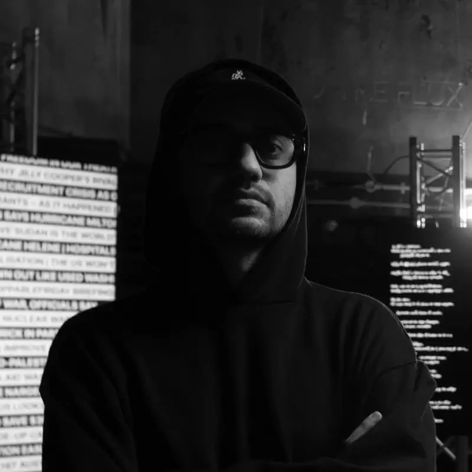

David Lazar

Title: interference_commons
David Lazar’s proposal challenges the idea of permacomputing by artistically exploring a future in which artificial intelligence brings us together rather than alienating and radicalising us. In his project, screens, servers, AI models, and audiences work together to imagine a different paradigm for technology: from accessibility design to algorithmic transparency, from collective decision-making strategies to decentralised processing power, and from sustainable technical solutions to privacy and digital sovereignty.
Through his proposal, everyone is invited to question their own day-to-day relationship with the ongoing technological waves that our societies seem to accept uncritically.
The Solar Futures partners are very happy to host this residency, which presents such an interesting challenge.
Premiere info: XXXXXX